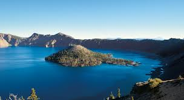
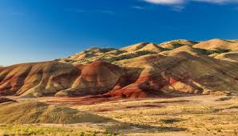
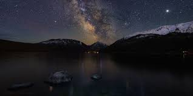
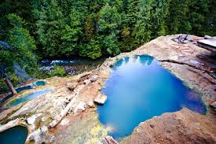

"Crater Lake, at 1,932 feet deep, is the deepest lake in the United States. And is a literal breathtaking shade of blue. At 7,913 feet deep, Hells Canyon is the deepest river-carved gorge in North America. The John Day Fossil Beds National Monument is one of the richest fossil sites in the world. You would need to travel to Pakistan to find a fossil bed that rivals this one. The largest concentration of wintering bald eagles can be found in Klamath Basin National Wildlife Refuge Complex. The Malheur Wildlife Refuge is home to the largest freshwater marsh in the U.S."
|   |
|   |